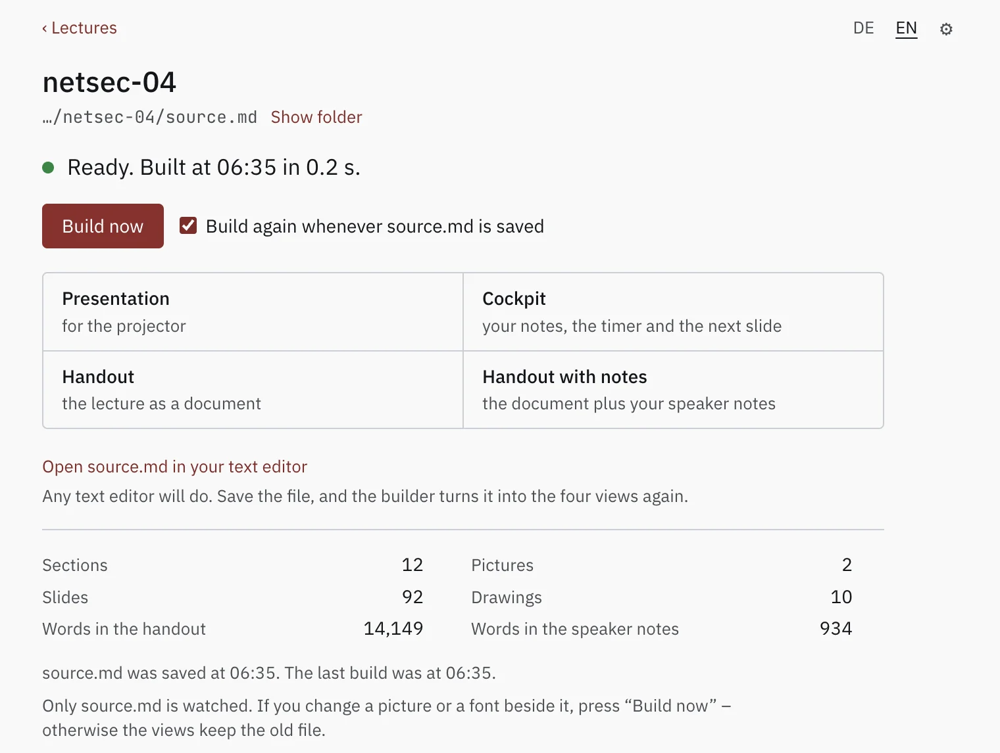

psi-slides · back to the front page · Diese Seite auf Deutsch
Getting started
Two ways in, and they end in the same place: both run the same
build.js and write the same four views beside your
source.md – a projection for the room, a cockpit for the
lecturer, and two handouts to print.
Option 1: you download an app
that builds the files at the press of a button. Open a
source.md in it and it rebuilds every time you save. Nothing
else has to be installed: no Node, no terminal, not even psi-slides
itself – the app carries the copy it was packaged with.
Option 2: you build your slides on
the command line – or you
let an AI agent do it. The repository carries the skills that teach a
language model the format. This way starts with the sources and one
npm install, and it is how a CI job builds a lecture
unattended.
The app
Open a lecture’s source.md, or drop it on
the window, and the four views are built. Leave the window open beside your
text editor and it builds them again each time you save.
One line says whether the last build worked, and four buttons let you open the four views it wrote. There is no project to set up either, and no settings to fill in before the first build.
Under them the window counts what the lecture holds – sections, slides, pictures, drawings, and how many words went to the handout against the speaker notes – so the size of a talk is readable without opening it.

Download it
Take the package for your system from the three below. Until 2.0.0 the app
is published separately from psi-slides itself, under a tag of its own,
builder-0.1.1, and marked on GitHub as a
pre-release: not the current version of anything, a package
offered early.
Windows 64-bit (experimental)
Installerruns through without a question and starts the apppsi-slides-builder-win-x64.exe
The first start
Windows and Linux are experimental. Those two packages come off the build machine and have not been started on a real one. They may well work; that is untested. If you try one, whether it runs or falls over is worth an issue either way. The macOS package has been used on a real Mac, which is the whole difference between the three blocks above.
The packages are not signed, apart from the macOS one, signed and notarised by hand before upload – Apple’s own check. If that signing has not happened yet, macOS warns on a double click that the developer cannot be verified: open it once with a right click and Open instead, and it is gone. Windows shows its SmartScreen warning once – More info, then Run anyway. An AppImage needs to be marked executable first.
What it is, and what it is not
When a build fails, the message from build.js stands as it
was written, naming the line in your source. The four views keep the last
build that worked, so a broken save never takes your slides away
mid-lecture.
There are two switches. Set Open the views through a local web address and you get a small local server: embedded YouTube and Vimeo players refuse to run from a file and need an address. Under Open the views in you pick Chrome or Edge, the browsers psi-slides is tested in, or whatever your system opens HTML with.
It is not a Markdown editor. You write the lecture in whatever text editor you already use; the window watches the file. There is no split view, no preview pane, no Git client and nowhere to type build commands.
Nor are the two ways two tools: the app runs the same
build.js on the same source.md and produces the
same four views. Nothing leaves the computer. No account,
no telemetry, no update check, no network access – and the local web
address above is bound to 127.0.0.1, reachable from this
machine and from nothing else.
The command line
The same build the app runs, typed out: for a machine that
already has a terminal on
it – and what a CI job runs. It needs Node 20 or
newer, which is what runs build.js, and nothing else:
no LaTeX, no Pandoc, no server, nothing installed system-wide. Not even git:
the clone below is the quickest way to the files, and the
ZIP
of the current sources is the same files unpacked.
Build the tutorial
You run npm install once. It fetches the typefaces
psi-slides embeds into every lecture and the handful of packages the build
uses, all of it into a node_modules folder beside
build.js.
The four views appear beside source.md as HTML
files, and they are what you hand over: each one carries its own fonts,
pictures and code, and fetches nothing when it is opened.
git clone https://github.com/UBA-PSI/psi-slides
cd psi-slides
# once: the bundled typefaces and the build dependencies
npm install
# build all four views next to source.md, then open the projection
node build.js lectures/tutorial/source.md
open lectures/tutorial/audience.html # macOS; xdg-open or your browser elsewhereWhile you are writing
Add --watch and the build reruns on every save
and reloads every open tab, so the text editor, the projection and the
cockpit stay visible at once. That is what the app does by default.
--serve is for what a file on disk cannot do:
play an embedded YouTube or Vimeo player. lint.js,
which reads a lecture over before you hand it out, has no button in the app
and lives here.
# rebuild on save, reload every open tab
node build.js lectures/tutorial/source.md --watch
# the same, served over http on this computer, for embedded players
node build.js lectures/tutorial/source.md --watch --serve
# chunk ids, word budgets, unclosed ::: blocks, oversized files
node lint.js lectures/tutorial/source.mdFrom a machine with nothing on it
The steps go from that machine to a built copy of the
tutorial. Work down them in order:
running npm install before the cd installs into whatever folder you were already in.
The app above needs none of this.
If you have never installed Node or used a terminal
Install Node
Open nodejs.org. The button offers the
LTS build – the long-term support one – in the right file for the machine
you are on; take that download. On macOS you get a .pkg:
double-click it, click through the installer, give your password when it
asks. On Windows you get an .msi: double-click, accept the
defaults, and leave the checkbox about tools for native modules alone.
Nothing in psi-slides needs them.
If you already use a package manager, brew install node on
macOS and winget install OpenJS.NodeJS.LTS on Windows do the
same thing.
Open a terminal
On macOS press Command-Space, type terminal, press Return.
On Windows open the Start menu and type terminal: take Windows
Terminal if it appears, PowerShell otherwise. You get a window with a cursor
in it. You type one line, press Return, and it answers.
node --versionThe answer is a version number. Anything from v20 upwards works, and a
fresh LTS download is well above it. If you instead get command not
found or is not recognized, close the window and open a
new one: a terminal that was already running when you installed Node has not
seen it yet.
Get the files
Take a clone if you have git, and the
ZIP
of the current sources otherwise – the same file the green
Code button of the
repository offers as
Download ZIP. It is not the Source code (zip) hanging off a
release: that one is the tagged 1.0.0 rather than the current state.
Unpack that ZIP the way you would any
other download; double-clicking is enough on both systems. You get a folder
whose name starts with psi-slides, and that folder is the whole
tool. Put it somewhere you can find again, because the terminal has to be
pointed at it in a moment.
On Windows, unpack the .zip rather than opening it by
double-click: Windows shows the contents of a ZIP as if it were a folder,
but commands cannot run inside it.
Point the terminal at the folder
cd psi-slidesThe cd line has to name where the folder actually is: on
Windows, for instance cd C:\Users\you\Downloads\psi-slides. Instead of
typing the path, type cd and a space, then drag the folder from
the file manager into the terminal window – the path writes itself.
Fetch what the build uses
npm installYou run npm install once, in that folder, and it takes a
few seconds. It fetches the
typefaces psi-slides embeds into every lecture and the handful of packages
the build uses. All of it lands in a node_modules folder beside
build.js: nothing is installed system-wide, and the lectures
you build open without it.
Build the tutorial
node build.js lectures/tutorial/source.mdThe build reports what it embedded – the images, the typefaces, the QR codes, the rendered maths – and ends with what it wrote. The same line works on Windows and macOS, forward slashes included: Node takes them on either system.
Wrote lectures/tutorial/print.html, lectures/tutorial/print-notes.html, lectures/tutorial/audience.html, lectures/tutorial/speaker.html (12 columns, 92 chunks)Open it
Double-click lectures/tutorial/audience.html. It opens in
your browser, and a browser is all it needs: press ? for the
keys, S for the cockpit. Mail the file to somebody who has none of
this installed and it still works.
Linux readers: your package manager has all of this.
Distribution packages are sometimes several versions behind, so
node --version is still worth running.
What is not settled yet
Both ways above build everything psi-slides can do. What they cannot hand you yet is a promise about all of it: the source format has been fixed since 1.0.0, and the parts written since then are not covered by that promise until the next release.
Figures written as ::: draw, the
title slides and section dividers, cards and
rows, and the graphical figure editor came after
1.0.0. You have them either way: the app was packaged with them, and a
clone or a source zip is the current state of the project.
They are not experiments. The reference lectures on this site are built with them, and so is the thirty-six-slide network-security lecture the figure language was written for.
What is not promised is that they stay exactly as they are written
today. Anything a lecture used before 1.0.0 keeps building the same way,
and that will not change. A lecture that names a cover:, a
::: dock or a ::: draw block may need an edit to
its source when those parts reach a release of their own.
Both have a page of their own on this site, written against the state you get: A slide is a frame and Figures you write.
Write your own lecture
A lecture is one folder with one source.md in it.
Have that first one written for you rather than starting from an empty file:
the settings block at the top of a source.md, its frontmatter,
has keys a blank page cannot guess.
What goes in that file is what the tutorial lecture teaches, a lecture about writing lectures: the format shown working rather than described, with its source beside it.
Three commands
Run --new and you get a folder with a valid
settings block and a few example chunks – one chunk, one slide. Then
leave --watch running while you write.
Run lint.js before you hand anything over: it
catches repeated chunk ids, unclosed ::: blocks, slides over
their word budget, and files too large to embed.
# write a new lecture folder, settings block included
node build.js --new my-lecture
# rebuild on save, and reload every open tab
node build.js lectures/my-lecture/source.md --watch
# chunk ids, word budgets, unclosed ::: blocks, oversized files
node lint.js lectures/my-lecture/source.mdIn the app, New lecture… asks for a folder name and a place
to put it and writes the same starter lecture --new writes,
down to a small figure for the diagram editor to open. Rebuilding on save is
the window’s normal state rather than a switch you set, and it shows
what the build says and no more than that, which is why
lint.js stays something you type – its messages name the
rule and the line number, so you read them with your source open.
Where to read further
- What psi-slides is The front page: one lecture as the room sees it and as the reader gets it, and why those are the same file.
- How psi-slides compares Beamer, reveal.js, Quarto, Marp, Slidev, PowerPoint and friends, in both directions, including where psi-slides loses.
- Figures you write The case for the figure language, and the manual beside it, which builds one a line at a time and lists every statement.
- The repository The README explains the format and says what the tool is good at and what it is not good at.